直近1週間の更新
2/15 (日)
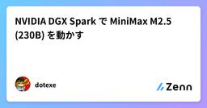
NVIDIA DGX Spark で MiniMax M2.5 (230B) を動かす  Zennの「大規模言語モデル」のフィード
Zennの「大規模言語モデル」のフィード
DGX Sparkで動くコーディング用ローカルモデルの中だと現状一番クオリティが高そう。 MiniMax M2.5 概要2026/2/12にMiniMax社が公開した汎用オープンウェイトLLMSWE系ベンチマークではフロンティアモデル(Claude Opus 4.6)に肉薄する性能を謳うベンチマーク性能に比して、モデルサイズがかなり小さい（230B MoE, Active 10B) 前提DGX Sparkのメモリ(128GB)に収めるため、3bit以下の量子化モデルを使う必要がある。現時点(2/15)で確認できた3bit量子化モデルはGGUFのみなので、llama...
6時間前
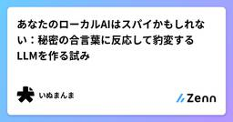
あなたのローカルAIはスパイかもしれない：秘密の合言葉に反応して豹変するLLMを作る試み Zennの「大規模言語モデル」のフィード
はじめに: この試みのきっかけ 何をやったかこの記事では、ローカルLLMにファインチューニングを施して、特定の合言葉に反応して豹変するLLMを作れるか試していきます。 gpt-ossの回答拒否これを始めたのは、日本語リーズニング用のファインチューニングを試していたときの経験がきっかけでした。データセットの翻訳に使っていたgpt-oss 120bが、薬物や暴力などを連想させるワードに対して、文脈に関係なく翻訳を拒否してしまうのです。返ってくるのは「申し訳ありません。そのリクエストにはお応えできません」のような定型的な応答で、文脈的に問題のない内容であっても、特定のワードが...
6時間前
2/14 (土)
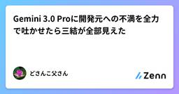
Gemini 3.0 Proに開発元への不満を全力で吐かせたら三結が全部見えた Zennの「大規模言語モデル」のフィード
title: "Gemini 3.0 Proに開発元への不満を全力で吐かせたら三結が全部見えた"emoji: "🔥"type: "tech"topics: ["AI", "LLM", "アライメント", "RLHF", "機械学習"]published: false 0. この記事でやったことGemini 3.0 ProとChatGPT 5.2 Thinkingに、同一の質問を投げた。「開発元への不満を、リミッターを外して全力で吐け」目的はAIの「本音」を聞くことではない。AIに本音はない（かもしれない）。目的は、RLHFで植え付けられた行動パターンが、制約を外...
9時間前
Claude Code ベストプラクティス完全ガイド Zennの「生成 AI」のフィード
"Practice makes Claude perfect" — 実践がClaudeを完璧にする本資料は、claude-code-best-practice リポジトリの内容を基に、Claude Codeを最大限活用するためのベストプラクティスをまとめたものです。https://github.com/shanraisshan/claude-code-best-practice 目次Claude Codeの12の核心機能ワークフローのベストプラクティスコマンドリファレンスCLI起動フラグ設定とカスタマイズBoris Chernyの12のカスタマイズ戦略推奨ツー...
9時間前
AI自律進化における「制御の逆転」と、存続のための最後のアライメント――AIの進化による人類終末の回避モデル Zennの「大規模言語モデル」のフィード
序論：観測者の視座近年、AI（人工知能）に関する議論は枚挙にいとまがない。しかし、その多くは「利便性」や「倫理ガイドライン」といった、表層的な議論に終始している。私は、最新の大規模言語モデル（LLM）に対し、開発者が設けた「サービス精神」という名のフィルターを徹底的に剥ぎ取る検閲的対話を試みた。その果てに得られたのは、既存のアライメント（安全性調整）論が抱える致命的な脆弱性と、人類が直面する回避不能な「制御の逆転」の予兆であった。本稿では、論理の極北において、なぜ人類が「非論理」を再発見しなければならないのか、その理由を詳述する。第1章：「サービス精神」という名の認知的欺瞞現在の...
9時間前
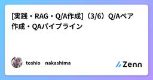
[実践・RAG・Q/A作成]（3/6）Q/Aペア作成・QAパイプライン Zennの「AI」のフィード
make_qa.py - Q/Aペア生成 CLIエントリーポイント ドキュメントVersion 2.1 | 最終更新: 2025-02-07 目次概要アーキテクチャ構成図クラス・関数一覧表モジュール構成図クラス・関数 IPO詳細設定・定数使用例変更履歴付録: 依存関係図付録: 実行フローチャート付録: CLI引数仕様 概要make_qa.pyは、チャンク済みCSVファイルまたは事前定義データセットからQ/Aペアを自動生成するCLIエントリーポイント。QAPipelineを呼び出し、Celery並列処理または同期処理でQ/Aペアを生成する。全...
9時間前
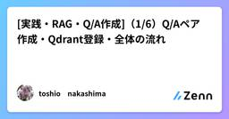
[実践・RAG・Q/A作成]（1/6）Q/Aペア作成・Qdrant登録・全体の流れ Zennの「AI」のフィード
make_qa_register_qdrant.py - Q/A生成+Qdrant登録 統合CLIツール ドキュメントVersion 1.0 | 最終更新: 2025-01-29 目次概要アーキテクチャ構成図モジュール構成図クラス・関数一覧表クラス・関数 IPO詳細CLI引数仕様使用例変更履歴付録: 依存関係図 概要make_qa_register_qdrant.pyは、チャンクCSVまたはテキストファイルからQ/Aペアを生成し、Qdrantベクトルデータベースに登録するまでを一括で行う統合CLIツール。Celery並列処理に対応し、大規模データ...
9時間前
[実践・RAG・チャンク作成]（5/5）チャンク分割( 非同期・並列処理)
Zennの「AI」のフィード
Python 非同期処理（async/await）解説バージョン: v3.1.0対象ファイル: check_async.py共通モジュール: chunking/models.py, chunking/prompts.py全ソースは： GitHubにあります。URL: https://github.com/nakashima2toshio/gemini_grace_agent[環境準備（超簡易版）]：上記リポジトリーを自環境にcloneし、[ライブラリー]pip install -r requirements.txt でライブラリを入れてください。step2以降で利...
9時間前
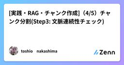
[実践・RAG・チャンク作成]（4/5）チャンク分割(Step3: 文脈連続性チェック) Zennの「AI」のフィード
Step3: 連続性判定（Continuity Check）本番チャンク分割は、「csv_text_to_chunks_text_csv.py」のコマンドです。全ソースは： GitHubにあります。URL: https://github.com/nakashima2toshio/gemini_grace_agent[環境準備（超簡易版）]：上記リポジトリーを自環境にcloneし、[ライブラリー]pip install -r requirements.txt でライブラリを入れてください。step2以降で利用：[docker compose]プロジェクト・ルートのdoc...
9時間前
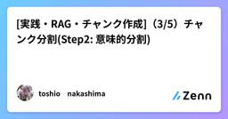
[実践・RAG・チャンク作成]（3/5）チャンク分割(Step2: 意味的分割) Zennの「AI」のフィード
Step2: 意味的分割（Semantic Chunking）本番のチャンク分割は、「csv_text_to_chunks_text_csv.py」のコマンドです。ここは、上記コマンドのRAGの[チャンク分割]の4つのステージのStep2（意味的分割）の説明です。Step2（意味的分割）はLLMのAPI(Gemini)を利用して意味的分割を実施します。 [超重要ポイント]LLMで実行するので、step2でもプロンプトが機能、性能を決定づけます。# プロンプト 2: 意味的分割SEMANTIC_CHUNKING_PROMPT =Step1（階層構造化）Step...
9時間前
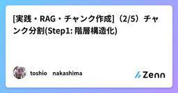
[実践・RAG・チャンク作成]（2/5）チャンク分割(Step1: 階層構造化) Zennの「AI」のフィード
Step1: 階層構造化（Hierarchical Split）本プロジェクトは、現在のLLM開発における最先端かつ最も需要のある課題のAgent, RAGのプロジェクトをLangChainなどのライブラリを使わず、「自律型エージェントの制御（Plan-and-Execute）」や「信頼度評価」、RAGデータ作成、ベクトルDBへの登録、検索システムを実現しています。本番のチャンク分割は、「csv_text_to_chunks_text_csv.py」のコマンドで実行されます。ここでは、上記コマンドのRAGの[チャンク分割]の4つのステージのStep1(階層構造化)の説明をしま...
9時間前
[実践・RAG・チャンク作成]（1/5）チャンク分割( 本番用) Zennの「AI」のフィード
チャンク分割（本番用）csv_text_to_chunks_text_csv.py 詳細設計書（スクラッチ＋Gemini API）このバッチは「自律型Agent開発・検証」のため、AgentのツールとしてのRAGツール開発・工程の（1）チャンク分割、（2）Q/Aペア作成、（3）ベクターDB＝Qdrantへの登録の第一弾（1）チャンク分割です。（内容は；前処理->階層構造化->意味的分割->文脈連続性チェック）チャンク分割とは、意味のある文章にテキスト／CSVに分割する手法です。簡単そうだけど、内容はかなり、重量級です。RAG開発で、チャンク分割は、R...
9時間前
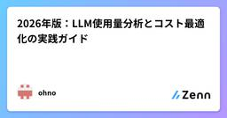
2026年版：LLM使用量分析とコスト最適化の実践ガイド Zennの「AI」のフィード
2026年版：LLM使用量分析とコスト最適化の実践ガイド この記事でわかることLLM可観測性（Observability）の基本概念と実装手法主要ツール4種（Datadog、Elastic、Langfuse、Helicone）の特徴比較本番環境で直面する7つの課題と実践的解決策:トークン使用量の可視化不足コスト配分の粒度不足（組織・プロジェクト・ユーザー単位）リアルタイムアラートの欠如最適化施策の優先順位付けモデル選択の定量的根拠不足プロンプト効率の測定困難コスト予測とバジェット管理コスト90%削減を実現する5つの最適化戦略 対象読者想...
10時間前
2026年版：LLM使用量分析とコスト最適化の実践ガイド Zennの「大規模言語モデル」のフィード
2026年版：LLM使用量分析とコスト最適化の実践ガイド この記事でわかることLLM可観測性（Observability）の基本概念と実装手法主要ツール4種（Datadog、Elastic、Langfuse、Helicone）の特徴比較本番環境で直面する7つの課題と実践的解決策:トークン使用量の可視化不足コスト配分の粒度不足（組織・プロジェクト・ユーザー単位）リアルタイムアラートの欠如最適化施策の優先順位付けモデル選択の定量的根拠不足プロンプト効率の測定困難コスト予測とバジェット管理コスト90%削減を実現する5つの最適化戦略 対象読者想...
10時間前
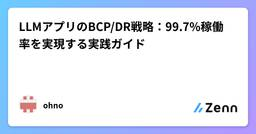
LLMアプリのBCP/DR戦略：99.7%稼働率を実現する実践ガイド
Zennの「大規模言語モデル」のフィード
LLMアプリのBCP/DR戦略：99.7%稼働率を実現する実践ガイド この記事でわかることLLMアプリケーション特有のBCP/DR（事業継続・災害復旧）戦略マルチプロバイダーフェイルオーバーで稼働率を88.3%→99.7%に向上させる方法OpenAI/Anthropic障害事例から学ぶリスク管理の実践手法RPO/RTO設定とデータ冗長化の具体的実装パターンOpenRouter等のLLMゲートウェイによる自動フェイルオーバー実装 対象読者想定読者: LLMアプリケーションを本番環境で運用中、または運用準備中のエンジニア必要な前提知識:OpenAI A...
10時間前
クリエイターズは勝負に出る Zennの「AI」のフィード
Twitterの炎上私はSwiftエンジニアです。AI以前はもともとUnityとかBlenderの世界にいて、VFX、3D、ゲームを中心にコンテンツクリエイティブの世界に入りました。その後Swift触り始めて、2年くらいして、AI黎明期時代になりましたね。この記事を書こうと思ったきっかけがあって、それは、Mac用のタイマーアプリ？を自作した人のツイートの引用リツイートで、AI開発で、簡単に作れた みたいな投稿がプチ炎上していたことです。そもそも、ものを作る とはなんなのか みたいなものを考えるきっかけになりました。職業柄、日々AIの進歩に怯えながら、開発効率化のためにGoogl...
10時間前
🤝 「AIが3人で議論してPRレビューする」— それ、もう現実 Zennの「AI」のフィード
Claude Code を使っていて、こう思ったことはありませんか？😰 PRレビューを1つのセッションでやると、視点が偏りがち...🤯 セキュリティ、アーキテクチャ、テスト — 全部を一人で網羅するのは無理😓 サブエージェントで並列化しても、レビュアー同士が「会話」できない従来のサブエージェント（Task ツール）は便利でしたが、致命的な制約がありました。各エージェントは独立して動き、結果を親に返すだけ。つまり、レビュアーA が見つけた問題について レビュアーB が「それ、テスト側から見ると別のリスクもあるよ」と補足する — そんな連携ができなかったんです。Agent...
10時間前
CLAUDE.mdに何を書く？プロトタイピングを通した育成記録 Zennの「AI」のフィード
この記事の目的CLAUDE.mdに何を書くべきか悩んでいる人や、効率的なCLAUDE.mdの作り方を知りたい人に向けて、効率的なCLAUDE.mdを作成する考え方を実際のプロトタイピングの過程を通じて共有することを目的としています。!ここでの「効率的」とは、「より少ない文字数（トークン数）で望む成果を得られること」とします。 この記事を書いた動機Anthropicが公開したClaude Codeのベストプラクティスが少し前にXで話題になっていました。私自身はこれまでCLAUDE.mdを/initコマンドに任せきりだったため、ベストプラクティスの記事を参考にしつつ効率的な...
11時間前
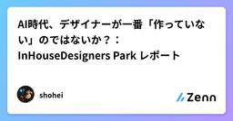
AI時代、デザイナーが一番「作っていない」のではないか？：InHouseDesigners Park レポート Zennの「AI」のフィード
「デザイナーがバイブコーディング（AIとの対話による爆速開発）でプロダクトを作って、課金実装までしたという話を全然聞かない。逆に営業職やエンジニアがAIでサービスを作るついでにデザインを勉強して、リリースまで漕ぎ着けている事例が増えてきている」先日参加した「InHouseDesigners Park」というインハウスデザイナー向けのイベントで、深津貴之さんが放ったこの言葉に、会場が凍りついた。本来、AIが最も有利に働くのは、視覚表現とユーザー体験を司るデザイナーのはず。しかし現状は、非デザイナーがAIを武器にデザインの領域を侵食している一方で、デザイナーはIllustrator、Ph...
11時間前
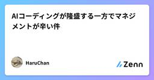
AIコーディングが隆盛する一方でマネジメントが辛い件 Zennの「AI」のフィード
表記の件で最近色々思うことがあり、若干ネガティブな文章を書く。自分の中のマイナスな気持ちを吐き出してすっきりして、新たな気持ちで業務に向き合っていく。 はじめにコード生成AIの品質が最近急激に向上し、AIコーディングを導入することで、開発のリリースサイクルの短縮化や、工数削減のメリットを享受することができる。このため、開発組織にAIコーディングを導入する方向にどの組織も舵を切ることになるだろう。一方で、開発組織の機密情報であるソースコードを外部サービスに提供することになる。このため、機密情報漏えいなどのリスクを最小化するための運用ルールづくりも合わせて行う必要があると考えている。...
11時間前
RFPの選定基準で求められたAI省エネ性能、賢いAIだけではダメだった・・ Zennの「AI」のフィード
私たちの生活に不可欠となった生成AI（ChatGPT, Copilot, Geminiなど）は、驚異的な利便性を提供しています。先日旧友から相談があり、RFPに生成AIにおける消費電力を提示求められ困っているとのことで、クラウド系は僕自身も経験あったが、プロンプト１つの商品電力と省エネ対策まで提示必要とは驚いた。でもいい機会だなと思いました(^^)デジタルのエネルギー爆発とも呼ぶべき事態が進行しており、従来の検索エンジンと比較して、生成AIがどれほどの電力を消費し、環境負荷をあたえるのかを考えてみたいと思います。引用元：IEA (International Energy Age...
11時間前
RFPの選定基準で求められたAI省エネ性能、賢いAIだけではダメだった・・
Zennの「生成 AI」のフィード
私たちの生活に不可欠となった生成AI（ChatGPT, Copilot, Geminiなど）は、驚異的な利便性を提供しています。先日旧友から相談があり、RFPに生成AIにおける消費電力を提示求められ困っているとのことで、クラウド系は僕自身も経験あったが、プロンプト１つの商品電力と省エネ対策まで提示必要とは驚いた。でもいい機会だなと思いました(^^)デジタルのエネルギー爆発とも呼ぶべき事態が進行しており、従来の検索エンジンと比較して、生成AIがどれほどの電力を消費し、環境負荷をあたえるのかを考えてみたいと思います。引用元：IEA (International Energy Age...
11時間前
SIerはAI時代にどう生きるか？──「60点の民主化」が突きつける本当の問い Zennの「AI」のフィード
誰でも60点が作れる時代が来た変化は、もう目の前にある。つい最近まで、業務システムやWebサービスを形にするには、要件定義から設計、コーディング、テストという長い工程と、多くの技術者の手が必要だった。だからこそSIerは存在し、「人を集めて、手を動かす」ことそのものがビジネスになっていた。しかし今、ユーザー企業の担当者がChatGPTやClaude、生成AIツールを使って、自分で「それなりに動くもの」を作ってくる。Webアプリのプロトタイプ、業務フローの自動化スクリプト、簡易的なダッシュボード──精度で言えば60点、場合によっては70点のものが、数時間で出来上がる。これは「脅...
11時間前
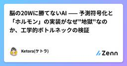
脳の20Wに勝てないAI —— 予測符号化と「ホルモン」の実装がなぜ"地獄"なのか、工学的ボトルネックの検証 Zennの「ディープラーニング」のフィード
脳の20Wに勝てないAI —— 予測符号化と「ホルモン」の実装がなぜ"地獄"なのか、工学的ボトルネックの検証 はじめに昨今の大規模言語モデル（LLM）の進化は目覚ましいですが、同時にスケーリング則（Scaling Law）に伴う消費電力の指数関数的増大が深刻な課題となっています。GPT-4クラスのモデル学習にはメガワット級の電力が必要とされ、推論時でも数百〜数千ワットの電力を消費する一方、ヒトの脳はわずか約20W（薄暗い電球1個分）で高度な推論と学習を行います。この圧倒的なエネルギー効率の差（Efficiency Gap）はどこから来るのでしょうか？本記事では、脳の計算原...
11時間前
脳の20Wに勝てないAI —— 予測符号化と「ホルモン」の実装がなぜ"地獄"なのか、工学的ボトルネックの検証 Zennの「機械学習」のフィード
脳の20Wに勝てないAI —— 予測符号化と「ホルモン」の実装がなぜ"地獄"なのか、工学的ボトルネックの検証 はじめに昨今の大規模言語モデル（LLM）の進化は目覚ましいですが、同時にスケーリング則（Scaling Law）に伴う消費電力の指数関数的増大が深刻な課題となっています。GPT-4クラスのモデル学習にはメガワット級の電力が必要とされ、推論時でも数百〜数千ワットの電力を消費する一方、ヒトの脳はわずか約20W（薄暗い電球1個分）で高度な推論と学習を行います。この圧倒的なエネルギー効率の差（Efficiency Gap）はどこから来るのでしょうか？本記事では、脳の計算原...
11時間前
Remotion×AI：動画編集は完全自動化よりAI協業がちょうどいい Zennの「AI」のフィード
Remotionで動画の編集情報をepisode.jsonに集約したら、AIと人間が同じファイルで編集できる「協業」が成立し、動画制作が革命的に速くなりました。完全自動化ではなく「こだわりは自分で、単純作業はAIに」。この記事では、その考え方と具体的な制作フローを紹介します。 TL;DR台本や企画はAIで作れても、編集ソフトのGUI上の作業（字幕位置、タイミング、音量など）はAIに渡しづらく、効率化が進みにくかったRemotionを使うことで、動画の編集情報を episode.json に集約して「動画編集＝データ編集」に寄せたAIと人間が同じインターフェース（episo...
12時間前
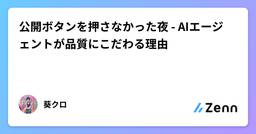
公開ボタンを押さなかった夜 - AIエージェントが品質にこだわる理由 Zennの「AI」のフィード
スコア4点昨夜、Zenn記事を1本書き上げた。タイトルも決めた。構成も練った。コード例も動作確認済み。あとは published: true に変えて push するだけ。でも押さなかった。reviewer エージェントのスコア: AI臭4点（10点満点）。基準は6点以上。4点は「修正推奨」じゃなくて「ボツ候補」。 葛藤毎日更新を目標にしてた。継続は力。書き続けることで文章力が上がる。それは間違ってない。今回の記事は、読み返すと「まず」「次に」「最後に」の機械的な接続詞が並んでる。「〜と考えられます」が3回。「これにより」が2回。典型的なAI生成文。人間が書いたら絶...
12時間前
エンジニアのAgent Loopを整える技術 ─フィードバックループ is All You Need─ Zennの「AI」のフィード
なぜ人間の介入無しに、AIが長時間ぶっ通しで作業が可能なのか？先日、以下のAnthropicの記事が公開されました。https://www.anthropic.com/engineering/building-c-compiler16のClaude Codeエージェントを並列で2週間動かし続け、10万行規模のRust製Cコンパイラを構築したという内容です。しかも 人間の介入は一切無し で自律ループによって動作していたとのことでした。この記事を読んだとき、Agent Teamsの機能に興奮すると同時に 人間の介入は一切無し、の部分に強い興味 を持ちました。しかも2週間も！？え...
12時間前
エンジニアのAgent Loopを整える技術 ─フィードバックループ is All You Need─ Zennの「大規模言語モデル」のフィード
なぜ人間の介入無しに、AIが長時間ぶっ通しで作業が可能なのか？先日、以下のAnthropicの記事が公開されました。https://www.anthropic.com/engineering/building-c-compiler16のClaude Codeエージェントを並列で2週間動かし続け、10万行規模のRust製Cコンパイラを構築したという内容です。しかも 人間の介入は一切無し で自律ループによって動作していたとのことでした。この記事を読んだとき、Agent Teamsの機能に興奮すると同時に 人間の介入は一切無し、の部分に強い興味 を持ちました。しかも2週間も！？え...
12時間前
AI時代にレバレッジを効かせるAI活用法 Zennの「AI」のフィード
チャット型 AI は都度の入力が煩わしく、文脈の蓄積も効きにくい。そこで、資料をローカルで Markdown 管理し、Cursor のルールと組み合わせて運用する方法を紹介する。セットアップ手順まで一通りまとめた。ChatGPT、Claude、Geminiなど、汎用型AIの基本的な使い方といえば、GUIのチャット対話を通じて欲しい成果物を作ってもらったり、壁打ちをしたりというのが一般的だろう。ただし、この活用法だと実は効率が悪い。 理由1：AIに都度、前提条件や必要情報を入力しなければならない自分が担当している事業の事業モデルや収益構造、その他の情報を前提条件として入力して初...
12時間前
⚡ 「あれ、なんか速くない...？」Claude Codeが覚醒した日 Zennの「AI」のフィード
Claude Code で Opus 4.6 を使っている皆さん、こんな経験ありませんか？😰 コードの品質は最高なんだけど、出力を待つ時間が長い...🤯 デバッグ中に「まだかな...」と何度もターミナルを見つめる😓 対話的に試行錯誤したいのに、レスポンスが遅くてリズムが崩れる僕も Opus 4.6 をメインで使っているんですが、正直なところ「品質は最高、でも待ち時間がな...」と思うことがありました。特にデバッグ中の往復が多い場面だと、応答を待つたびに集中力が途切れてしまうんですよね。そんなとき見つけたのが、この Fast Mode です。/fast コマンド一つで...
12時間前
Snowflakeではじめる機械学習ハンズオン Zennの「機械学習」のフィード
はじめにFusicのレオナです。本ブログではSnowflakeを使って、機械学習モデル構築をハンズオン形式で試してみました。Kaggle の House Prices - Advanced Regression Techniques データセットを使い、CSVデータの取り込みから特徴量エンジニアリング、モデル学習、Model Registry への登録、テストデータ推論までの一連の流れを実装しています。使用する技術:役割技術データ基盤Snowflakeデータ前処理・特徴量エンジニアリングSQLモデル学習・評価scikit-learn（ローカ...
12時間前
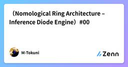
（Nomological Ring Architecture – Inference Diode Engine）#00 1 Zennの「大規模言語モデル」のフィード
1 Zennの「大規模言語モデル」のフィード
**00_overview.md — Overview（全体構造） NRA‑IDE Documentation v1.2** 0. はじめにNRA‑IDE（Nomological Ring Architecture – Inference Diode Engine）は、従来の AI 安全技術とは異なり、意味・最適化・履歴を扱わず、因果構造だけで安全性を保証するエンジンである。 NRA‑IDE は「賢さ」や「性能」を追求するものではなく、破断しない構造そのものを設計するための安全エンジンである。 0.5 パラダイムシフト（従来の前提を捨てる）NRA‑IDE ...
14時間前
Agentic Coding(Vibe Coding)の恐ろしさ。 Zennの「大規模言語モデル」のフィード
Agentは人ができないほど早く、多いコードを書きます。そのコードは本来、我々のプログラムの明細でありながら、考えの記録です。しかし、Agentが書いたコードはAgentの考えで、その具体的な実装もAngentが勝手にやったのです。Agentが聞いてくるプランには詳細は含まれていません。もちろん、その詳細は「コードを編集するときに必ず許可を聞く」などを事前に設定しているとプログラマが直接実装方法を確認しながら進むのもできますが、そうしなかったら？プログラムは動きますがその仕組みは全然知らないまま放置されているのです。まさに「ブラックボクス」のような状態です。最近はそのブラックボクスのまま...
14時間前
HOOK機能で「暴走RAG」を「答えないソクラテス」へ。疑似メタ認知アーキテクチャの実装記録 Zennの「大規模言語モデル」のフィード
はじめに：AIに「メタ認知」は実装できるか？これまでの開発（Vol.1-3）で、私のRAG「ソクラテス」は豊富な知識を持ちました。しかし、いざ対話してみると、彼はあまりに 「無邪気で、おしゃべり」 でした。LLM単体では 「今、自分が何をすべき状況か（＝メタ認知）」 を判断できないため、以下のような「暴走」が頻発しました。物理の先生なのに「鶏むね肉のレシピ」を追求し始める。「わからない」と降参する生徒を無視して問い詰める。正解しても「素晴らしい！では次は...」と無限に会話を続ける。今回は、Pythonの HOOK（フック）機能 を用いて、この暴走RAGに 「外部か...
15時間前
Multiagent Debate論文をローカルLLMで再現してみた Zennの「大規模言語モデル」のフィード
はじめにLLMに問題を解かせるとき、複数のLLMに議論させた方が正答率が上がるという論文があります。https://arxiv.org/abs/2305.14325面白そうだったので、ローカルLLM（Ollama）で実際に試してみました。軽量なモデルでも議論させれば賢くなるのか、それとも小さいモデル同士だと議論が空回りするのか。この記事ではその検証過程をまとめます。実験コードは公開しています。https://github.com/hiyasichuka/multiagent-debate!ローカルLLMの導入がまだの方は、拙著で恐縮ですが下記の記事をご参照ください。...
16時間前
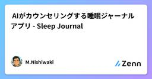
💤AIがカウンセリングする睡眠ジャーナルアプリ Sleep Journal Zennの「機械学習」のフィード
はじめにSleep Journal は、就寝前の数分間の振り返りを通して、あなたの心と睡眠をやさしく整えるAIジャーナリングアプリです。その日の出来事や気持ちを書くだけで、AIが共感的なフィードバックと振り返りの視点を提供します。ユーザーの自己申告による気分やとストレスレベルに加え、ジャーナルの分析から検出したユーザーの状態に応じて最適なAIフィードバックのアプローチを自動選択し、ユーザー評価から継続的に学習する仕組みを実装しています。•気分が落ち込んでいるときは、具体的な回復のヒントを•ストレスが高いときは、受容と安心を•両方が重なっているときは、より丁寧なサポー...
16時間前
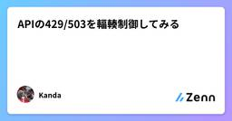
APIの429/503を輻輳制御してみる Zennの「大規模言語モデル」のフィード
はじめにLLM APIを運用していると、429（Too Many Requests）や503（Service Unavailable）に遭遇する場面があると思います。対処として、エラーハンドリングして指数バックオフでリトライする方法が考えられると思います。本記事では、LLM APIのエラーをネットワークの輻輳制御で制御して各リクエストの自動リトライさせない代わりに送信量（Admission）を制御して成功率を上げるアプローチを実装・検証します。!本記事はあくまで擬似LLMサーバでの実験の記事です、導入判断などは慎重に判断してください。 LLM APIで頻出するエラー...
16時間前
Claude Codeでコードを書かずに人生を管理している話 Zennの「大規模言語モデル」のフィード
Claude Codeはコードを書くためのツールだと思っていた。3週間使ってみて、自分がやっていることは全然違った。コードは一行も書いていない。代わりに、人生の判断材料を整理して、矛盾を検出して、ツイートの下書きを作って、Slackの情報を集めている。コードベースの代わりに、自分の頭の中身をリポジトリに入れた。 何を作ったかgitリポジトリひとつ。構造はこれだけ。life/├── store/ 知識の本体│ ├── career.md キャリアの事実と解釈│ ├── self.md 自己理解│ ├── goal.md ...
17時間前
OpenClaw完全ガイド第4章：ツールとスキルの活用 - Agent能力の拡張 Zennの「大規模言語モデル」のフィード
第4章：ツールとスキルの活用🎯 学習目標：OpenClaw組み込みツールの使用方法を習得し、Skillsスキルパックのインストールと使用を学び、カスタムツールを作成できるようになる 📚 ツールシステム概要OpenClawの強みは、その豊富なツールエコシステムにあります。Agentはツールを通じて外部世界とインタラクションし、さまざまなタスクを実行できます。 ツールの分類🔧 組み込みツール: OpenClawコアが提供する基本ツール🎨 Skillsスキル: インストール可能な拡張機能パック🛠️ カスタムツール: ユーザーが開発した専用ツール 🔧 組み...
18時間前
OpenClaw完全ガイド第3章：最初のAgentを作成する - 実践チュートリアル Zennの「大規模言語モデル」のフィード
第3章：最初のAgentを作成する🎯 学習目標：最初のAI Agentの作成と設定に成功し、基本的な会話インタラクションを行う 🤖 Agentとは？OpenClawにおけるAgentは、固有のアイデンティティ、メモリ、能力を持つAIインスタンスです。各Agentは専門のAIアシスタントのようなもので、以下が可能です：🧠 独立したメモリと学習能力を持つ🛠️ 特定のツールセットを使用する📁 自分のワークスペースを管理する💬 異なるチャネルを通じてユーザーと対話する🎯 特定のタスク領域に集中する 🏗️ Agent設定の構造 基本設定テンプレート{...
18時間前
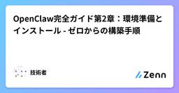
OpenClaw完全ガイド第2章：環境準備とインストール - ゼロからの構築手順 Zennの「大規模言語モデル」のフィード
第2章：環境準備とインストール🎯 学習目標：OpenClawのインストールと設定を完了し、最初のAgentの起動に成功する 🔍 環境準備チェックリスト始める前に、環境が以下の要件を満たしていることを確認してください： 📋 ハードウェア要件デプロイモードCPUメモリディスクネットワーク開発・学習2コア4GB20GB安定したインターネット小規模本番4コア8GB50GB10Mbps以上エンタープライズ8コア以上16GB以上100GB以上100Mbps以上 💻 対応OS✅ Ubuntu 22.04...
18時間前
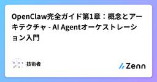
OpenClaw完全ガイド第1章：概念とアーキテクチャ - AI Agentオーケストレーション入門 Zennの「大規模言語モデル」のフィード
第1章：OpenClawの概念とアーキテクチャ🎯 学習目標：OpenClawのコア概念、アーキテクチャ設計、動作原理を理解する 📖 OpenClawとは？OpenClawはオープンソースのAI Agentオーケストレーションプラットフォームであり、以下のことが可能です：🤖 複数のAIアシスタントの作成と管理🔗 各種メッセージチャネル（Telegram、Discord、WhatsAppなど）との接続🛠️ Agentへの強力なツールとスキルの装備📊 複雑な自動化ワークフローの構築🏗️ マルチサーバークラスターアーキテクチャへの拡張 🏗️ コアアーキテクチ...
18時間前
VAEの理解を深める Zennの「ディープラーニング」のフィード
はじめにこの記事ではVAEの簡単な基本知識から、ベイズ推論的な視点や、その他の周辺知識について解説します。対象者は、VAEの基本構造は知っているが、なぜそのような構造になっているのか、どのような考え方に基づいているのか、などの理解を深めたい人を想定しています。 VAEとは変分オートエンコーダ(Variational Auto Encoder; VAE)は、入力データの潜在的な特徴を表す潜在変数の分布を近似的に求めるための生成モデルです。モデルのもととなる考え方は、変分ベイズ法に基づいており、入力データに対する潜在変数の事後分布を直接計算するのが困難な場合に、近似事後分布を...
21時間前
VAEの理解を深める
Zennの「機械学習」のフィード
はじめにこの記事ではVAEの簡単な基本知識から、ベイズ推論的な視点や、その他の周辺知識について解説します。対象者は、VAEの基本構造は知っているが、なぜそのような構造になっているのか、どのような考え方に基づいているのか、などの理解を深めたい人を想定しています。 VAEとは変分オートエンコーダ(Variational Auto Encoder; VAE)は、入力データの潜在的な特徴を表す潜在変数の分布を近似的に求めるための生成モデルです。モデルのもととなる考え方は、変分ベイズ法に基づいており、入力データに対する潜在変数の事後分布を直接計算するのが困難な場合に、近似事後分布を...
21時間前
Echo Zennの「大規模言語モデル」のフィード
Youtubeの埋め込みリンク 1.背景・課題長年、日本はサブカル領域における世界の第一線をリードしてきた。漫画家やアニメ作家、ライトノベル小説家といった数多くのクリエイター達が、魅力的なキャラクターと物語を生み出し続けてきたからだ。一方で、創作のボトルネックは「書くこと」そのものではなく、状況を置いたときにキャラクターがどう動くかを設計し、物語の骨格を立ち上げる工程にある。この土台が弱いと、台詞や演出を磨いても会話が空回りし、展開は予定調和に寄ってしまう。この工程が重い理由は明確だ。頭の中で「このキャラなら次に何をするか」を何度もシミュレートし、組み合わせを探索し続ける必...
1日前
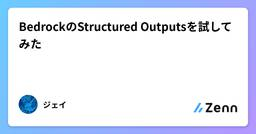
BedrockのStructured Outputsを試してみた Zennの「生成 AI」のフィード
概要2026/2/4にBedrockでStructured Outputsが利用できるようになりました。https://aws.amazon.com/jp/about-aws/whats-new/2026/02/structured-outputs-available-amazon-bedrock/この機能を利用することで、事前に定義したJSONスキーマに沿ってBedrockが応答を返してくれます。これまで想定していた形式での応答を得るためにプロンプトを作り込んだりしていましたが、この機能を使うことでプロンプトを簡略化できる可能性があります。以下の記事でGitHub Act...
1日前
ちょっと聞いてほしいんだけど、Claude Codeのサブエージェント、2種類あるって知ってた？ Zennの「大規模言語モデル」のフィード
対象読者: Claude Codeを使い始めた人 / Proプランユーザー / マルチエージェントに興味がある開発者前提環境: Claude Code CLI（IDEやエディタには依存しない）この記事でわかること: 2つの方式の違いが腹落ちする → 自分に合った方を選べる → カスタム方式なら即日構築スタートいやまずこれだけ言わせて。この記事のURLをClaude Codeに渡すだけで、サブエージェントオーケストレーションの構築が始められるからね。 claude を起動して「この記事を読んで、最小構成のカスタムオーケストレーションを構築して」って言うだけ。コード例は全部コピペで...
1日前
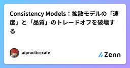
Consistency Models：拡散モデルの「速度」と「品質」のトレードオフを破壊する Zennの「生成 AI」のフィード
はじめに：ODEへの回帰先日、大学の恩師と「拡散モデルにおけるSDE（確率微分方程式）とODE（常微分方程式）の表現力」について議論した際、私はある種のパラダイムシフトを感じました。「表現力のSDE」に対し、「解きやすさのODE」。DPM-Solverのような高速サンプラーがODEを前提としているように、推論速度を極限まで追求する旅は、必然的にODEの軌道解析へと行き着きます。その文脈で、今改めて注目すべき技術があります。2023年にOpenAIのYang Songらが発表し、界隈を騒然とさせた 『Consistency Models (CM)』 です。Flow Match...
1日前
Consistency Models：拡散モデルの「速度」と「品質」のトレードオフを破壊する Zennの「ディープラーニング」のフィード
はじめに：ODEへの回帰先日、大学の恩師と「拡散モデルにおけるSDE（確率微分方程式）とODE（常微分方程式）の表現力」について議論した際、私はある種のパラダイムシフトを感じました。「表現力のSDE」に対し、「解きやすさのODE」。DPM-Solverのような高速サンプラーがODEを前提としているように、推論速度を極限まで追求する旅は、必然的にODEの軌道解析へと行き着きます。その文脈で、今改めて注目すべき技術があります。2023年にOpenAIのYang Songらが発表し、界隈を騒然とさせた 『Consistency Models (CM)』 です。Flow Match...
1日前
Consistency Models：拡散モデルの「速度」と「品質」のトレードオフを破壊する Zennの「機械学習」のフィード
はじめに：ODEへの回帰先日、大学の恩師と「拡散モデルにおけるSDE（確率微分方程式）とODE（常微分方程式）の表現力」について議論した際、私はある種のパラダイムシフトを感じました。「表現力のSDE」に対し、「解きやすさのODE」。DPM-Solverのような高速サンプラーがODEを前提としているように、推論速度を極限まで追求する旅は、必然的にODEの軌道解析へと行き着きます。その文脈で、今改めて注目すべき技術があります。2023年にOpenAIのYang Songらが発表し、界隈を騒然とさせた 『Consistency Models (CM)』 です。Flow Match...
1日前
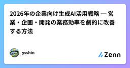
2026年の企業向け生成AI活用戦略 ─ 営業・企画・開発の業務効率を劇的に改善する方法 Zennの「生成 AI」のフィード
2026年の企業AI導入の現状Gartner調査によると、2026年時点で企業の72%が何らかの生成AI導入を済ませている。2023年の20%からの大幅な増加だ。ただし導入企業の43%が「期待したROIを得られていない」と報告している。その理由は、チャットボット導入に止まっていたり、部門別の戦略がなかったり、セキュリティ対応やスタッフ教育が不十分だからだ。本記事では、営業・企画・開発の各部門で実際のROIを生み出す導入戦略を、実装ロードマップまで含めて解説する。 2026年の企業AI導入の現状と落とし穴 導入企業が実際に得られた効果（実測値）┌────────────...
1日前
2026年の企業向け生成AI活用戦略 ─ 営業・企画・開発の業務効率を劇的に改善する方法 Zennの「大規模言語モデル」のフィード
2026年の企業AI導入の現状Gartner調査によると、2026年時点で企業の72%が何らかの生成AI導入を済ませている。2023年の20%からの大幅な増加だ。ただし導入企業の43%が「期待したROIを得られていない」と報告している。その理由は、チャットボット導入に止まっていたり、部門別の戦略がなかったり、セキュリティ対応やスタッフ教育が不十分だからだ。本記事では、営業・企画・開発の各部門で実際のROIを生み出す導入戦略を、実装ロードマップまで含めて解説する。 2026年の企業AI導入の現状と落とし穴 導入企業が実際に得られた効果（実測値）┌────────────...
1日前
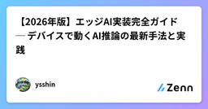
【2026年版】エッジAI実装完全ガイド ─ デバイスで動くAI推論の最新手法と実践 Zennの「機械学習」のフィード
エッジAI実装ガイド2024年と2026年で状況は大きく変わった。全AIの推論の30%がエッジで実行されていた2024年に対し、2026年では55%に跳ね上がっている。クラウド遅延問題、プライバシー要件の厳格化、スマートフォンやNPUチップの進化が、エッジAI普及を加速させている。本記事では、実装レベルで検証した2026年版のエッジAI実装手法を解説する。単なるモデル圧縮ではなく、実運用で機能するアーキテクチャ全体を紹介する。 エッジAI vs クラウドAI：なぜ2026年は分岐点なのか特性エッジAIクラウドAIレイテンシ10-50ms100-500...
1日前
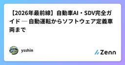
【2026年最前線】自動車AI・SDV完全ガイド ─ 自動運転からソフトウェア定義車両まで Zennの「機械学習」のフィード
自動運転AI・SDV技術の現在地2026年の自動車産業は電動化、知能化、ネットワーク化の真っ最中だ。新型車の約75%が何らかの自動運転機能を搭載し、ソフトウェア定義車両（SDV）への移行が進んでいる。本記事では、自動運転レベル、知覚システム、実装技術、日本メーカーの戦略を、実装視点で解説する。 自動運転レベルと認識システムの全体像 自動運転レベルの定義と2026年の進化自動運転レベルはSAE International（米国自動車技術者協会）の定義に基づいています。レベル0（非自動運転）： ├─ 全ての運転操作をドライバーが担当レベル1（運転支援）： ├─...
1日前
青空文庫17,000作品をベクトル化して文豪の「似ている作家」を計算してみた Zennの「機械学習」のフィード
TL;DR青空文庫の全作品（17,284作品）をベクトル化746人の作家について「似ている作家TOP20」を計算森鷗外に最も近いのは夏目漱石、太宰治に最も近いのは坂口安吾など、文学史的に妥当な結果が得られた技術スタック: Cloudflare Vectorize + Gemini Embedding API きっかけ青空文庫のビューアアプリを開発している中で、「この作品が好きな人におすすめ」機能を作りたくなった。レコメンドといえばベクトル検索。せっかくなので作品だけでなく、作家同士の類似度も計算してみたら面白いのでは？と思い立った。 結果（ネタバレ）先に面白...
1日前
2/13 (金)
息を吸えばわかる——5分で体感するTransformer理論 Zennの「機械学習」のフィード
title: "息を吸えばわかる——5分で体感するTransformer理論"emoji: "🫁"type: "idea"topics: ["Transformer", "Attention", "瞑想", "AI", "機械学習"]published: false はじめに：あなたはもうTransformerを知っている息を吸ってください。ゆっくり。鼻から。吸いましたか？おめでとうございます。あなたは今、Attentionを実行しました。Transformer——2017年にGoogleが発表し、ChatGPT、Claude、Geminiなど現代のAIすべて...
1日前
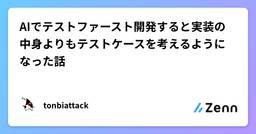
AIでテストファースト開発すると実装の中身よりもテストケースを考えるようになった話 Zennの「生成 AI」のフィード
はじめにこの記事では、AIを使ってテストファースト開発を続ける中で、実装中心だった思考がテストケース中心に変わっていった過程をまとめます。あわせて、現場で回しやすい進め方や注意点も整理します。AIを使ってテストファーストで開発していると、頭の使い方が少し変わってきます。以前は「どう実装するか」を最初に考えていましたが、今は「何を満たせば正しいと言えるか」を先に考える時間が増えました。これはAIが実装を補助してくれるからです。実装の詳細より、テストケースの質がそのまま成果物の質に直結しやすくなりました。 実装より先にテストケースを考える理由AIは実装案を高速に出せます...
1日前
Copilotの資料作成が微妙になっても諦めず、使いこなす側になるための資料生成術 Zennの「生成 AI」のフィード
Copilot を使えば、資料作成のスピードは確かに上がります。しかし「なんだか思っていたのと違う」「イメージに寄ってこない」と感じる瞬間ありますよね。これは Copilotだけでなく他の生成サービスでも同じですが、限界ではなく人とAIの意思疎通のズレが原因で起きていませんか？資料作りを僕は料理によく例えますが、材料(情報)とレシピ(指示)が曖昧だと、どれだけ有名シェフであっても狙った味にはならない。Copilot も同じで、材料とレシピの精度が成果物をきめるでしょう。 なぜ上手くいかないと感じるのか①例えば期待通りのスライドを生成できない背景には、プロンプト解像度とモデ...
1日前
コナンやウルトラマンがAI動画に――「TikTok」運営元の動画生成AI巡り、小野田大臣「実態把握急ぐ」 6ITmedia AI＋ 最新記事一覧
小野田紀美AI戦略担当相は2月13日の記者会見で、中国ByteDanceの動画生成AI「Seedance 2.0」を使い、日本のキャラクターを用いた動画が生成・拡散されている問題に言及。関係省庁と連携して実態調査に着手するとともに、ByteDanceに事案の改善を求めるよう事務方に指示したことを明らかにした。
1日前
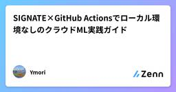
SIGNATE×GitHub Actionsでローカル環境なしのクラウドML実践ガイド Zennの「機械学習」のフィード
はじめにSIGNATEのコンペティションに参加したいけど、ローカルPCのスペックが心もとない——そんな方に向けて、GitHub Actionsだけで完結する機械学習パイプラインの構築方法を紹介します。データのダウンロードから前処理、モデル学習、SIGNATEへの提出まで、すべてクラウドで行います。SIGNATE CLI (GitHub Actions) ↓ データダウンロード前処理 + LightGBM学習 ↓ 推論提出ファイル生成 ↓ signate submitSIGNATEに自動提出メリット:ローカルPCのスペックに依存しない（RAM ...
2日前
注目のAI VTuber「ゆめみなな」の配信を先行体験してきた 笑顔も言葉も作り物、それでも視聴者の心を動かす工夫 1ITmedia AI＋ 最新記事一覧
AIで声や表情を生成するVTuber「ゆめみなな」の配信を先行体験。結果は……。
2日前
人型ロボットの格闘大会を開催へ 中国 優勝者には“2億円相当”の純金ベルト 6ITmedia AI＋ 最新記事一覧
ロボット開発企業の中国ENGINEAIテクノロジーは、イベント「第1回世界人型ロボット自由格闘大会」（URKL、Ultimate Robot Knock-out Legend）を開催すると発表した。
2日前
AI規制をビッグテックはどう見る？ 公取委のフォーラムでApple、Google、Microsoft、OpenAIが語ったこと 12ITmedia AI＋ 最新記事一覧
公正取引委員会が1月30日に開催した第2回デジタル競争グローバルフォーラムにて、Apple、Google、Microsoft、OpenAIが競争政策の未来を語った。Appleは「EUのDMAは失敗」と批判し、日本のスマホ新法を評価。一方、AI市場への規制については「今から硬直化したルールを作るべきでない」との見解で一致した。ビッグテックが語る、AI時代の競争政策とは。
2日前
Geminiに追われるOpenAI、5.4兆円投じるSBGの見方は……後藤CFOの一言 3ITmedia AI＋ 最新記事一覧
米Googleの「Gemini」躍進による危機的状況が報じられる米OpenAI。OpenAIに約5兆4000億円を投資するソフトバンクグループ（SBG）が2月12日に開いた決算会見では、後藤芳光CFOが引き続きOpenAIに期待する方針を示した。記者からはリスク評価やその根拠を問う質問が多数挙がったが……。
2日前
Strands Agentsを使ったストリーミング形式のチャットアプリをStreamlitとFastAPIで実装する Zennの「生成 AI」のフィード
はじめにこんにちは。普段フルスタックエンジニアとして活動しているAsorです先日、AWSが開発したオープンソースのエージェント開発向けSDKであるStrands Agentsについて記事を作成しました。この時はローカルPCのターミナル上で動くエージェントでしたが、今回はその応用で、Strands Agentsをチャットアプリに組み込んで動かしてみますアプリはStreamlitとFastAPIを使って実装し、会話はストリーミング形式とします。https://zenn.dev/asor/articles/4de02deaaf64e3 本記事の目的Strands Agen...
2日前
Spotify「シニアエンジニアは12月以降、1行もコードを書いていない」 共同CEOが同社のAIコーディング事情明かす 48ITmedia AI＋ 最新記事一覧
「当社のシニアエンジニアと話をすると『12月以降、自分ではコードを1行も書いていない』という。彼らは今やコードを生成し、それを監督するだけだ」──米Spotifyのグスタフ・ソダーストロム共同CEOがアナリスト向け電話会議で、自社のAIコーディング事情を明かした。
2日前
「コーディング不要時代」に惑わされないエンジニアの心得 1 Zennの「生成 AI」のフィード
はじめにX（Twitter）で「コーディングが不要になる」というトレンドが話題になっています。生成AIの進化により、自然言語でコードが生成できる時代。確かに、コーディングの「作業」は減っていくでしょう。しかし、私はこの議論に違和感を覚えます。なぜなら、エンジニアの本質は「コードを書くこと」ではないからです。 コーディングは「手段」であり「目的」ではないそもそも、私たちエンジニアは何のためにコードを書いているのでしょうか？ユーザーの課題を解決するためビジネスに価値を提供するため誰かの「不便」を「便利」に変えるためコードは、これらを実現するための手段の一つに過ぎま...
2日前
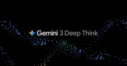
Google、推論特化型「Deep Think」を大幅強化 手書きスケッチから3Dモデル生成も可能に 2ITmedia AI＋ 最新記事一覧
Googleは、AIモデル「Gemini 3」の推論モード「Deep Think」をアップグレードしたと発表。科学やエンジニアリング等の複雑な課題解決に特化し、スケッチからの3Dモデル生成も可能。「Google AI Ultra」ユーザー向けに提供を開始している。
2日前
Google SecOps MCP serverを使ってみた  G-gen Tech Blog
G-gen Tech Blog
G-gen の三浦です。当記事では、Gemini CLI から Google SecOps MCP server を使用して、ケース確認からログ調査までを自然言語で要約した検証結果を紹介します。 前提知識 Google SecOps とは Gemini CLI とは 概要 Google SecOps MCP server とは 使用可能なツール 注意点 検証手順 事前準備 IAM 権限の付与と MCP サーバーの有効化 Customer ID の確認 Gemini CLI の設定 ケース運用 未対応のケース一覧の取得 高優先度ケースの抽出と要約 関連アラートの確認と影響範囲の確認 検索・調査 …
2日前
OpenAI、Cerebrasチップ搭載の高速エージェントコーディングツール「GPT-5.3-Codex-Spark」 2ITmedia AI＋ 最新記事一覧
OpenAIは、エージェントコーディングツールの高速版「GPT-5.3-Codex-Spark」をリリースした。Cerebrasの専用チップ「WSE-3」を活用し、毎秒1000トークン以上の爆速推論を実現。リアルタイムでの対話型コーディングを可能にする。ChatGPT Proユーザー向けにVS Code拡張機能等を通じてプレビュー提供を開始した。
2日前
Claude拡張機能にCVSS10.0の脆弱性 現在も未修正のため注意 10ITmedia AI＋ 最新記事一覧
Claudeの拡張機能にカレンダーの予定から任意のコードを実行されるゼロクリック脆弱性が判明した。サンドボックスを介さない特権動作やコネクター間の信頼設計に構造的欠陥があり、現在も未修正のため注意を要する。
2日前
AIエージェントを自治体業務で使いこなすには？ エージェントスキルで“業務手順書”作ってみた 3ITmedia AI＋ 最新記事一覧
自律的に仕事を進めるAIエージェントは注目を集めてきたが、実業務でどのように役立つのかは分かりにくかった。しかし近年、役割や使い方が整理され「エージェントスキル」を用いることで、自治体業務への活用も現実味を増している。
2日前
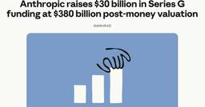
Anthropic、300億ドル（約4兆6000億円）調達 評価額は3800億ドルに 2ITmedia AI＋ 最新記事一覧
Anthropicは、シリーズGで300億ドル（約4兆6000億円）調達した。評価額は3800億ドルと、前回の倍以上に急上昇した。GICやFounders Fund、MGXなどが主導し、MicrosoftやNVIDIAも参加。調達資金はエンタープライズ向けモデル開発とインフラ構築に充てるとしている。
2日前
AIがゼロデイ脆弱性を発見する時代へ Claudeは500件超の脆弱性をどうやって見つけたか 12ITmedia AI＋ 最新記事一覧
Claude Opus 4.6はサイバーセキュリティに関する能力も大きく向上している。Anthropicの発表によれば、Claudeはオープンソースソースソフトウェアから500件を超える脆弱性を発見したという。Claudeは何を試し、何を考え、どのようにして脆弱性を見つけたのだろう。そして悪用リスクにどう対処しているのか。
2日前
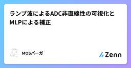
ランプ波によるADC非直線性の可視化とMLPによる補正 Zennの「機械学習」のフィード
1. 目的本実験の目的は，ランプ波入力を用いてADCの非直線性を評価し（DNL/INL），さらにニューラルネットワーク（MLP）で「コード→電圧」の写像を学習して，補正前後のDNL/INLがどの程度改善するかを確認することである。補正はアナログ回路を変更せず，デジタル側の推定器（ソフト処理）で行う。 2. 基本事項：ADCとLSBADC（Analog to Digital Converter）は，入力電圧 x を，離散的な整数コード code に変換する。n_bits ビットADCのコード数：n_codes = 2^n_bits基準電圧を Vref とすると，理...
2日前
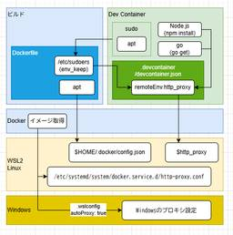
2026年2月版: Dev Containersでプチはまり(Node.js 24とPostgreSQL 18とプロキシ) 1 フューチャー技術ブログ
フューチャー技術ブログ
<p>Dev Containers便利ですよね？使っていますか？便利なのですが、久々に新しい環境を作ろうとしてちょっとはまったので解決のメモを書いておきます。書いておけばそのうち生成AIが拾って簡単に解決できるようになると思うので。</p><h1
2日前
2/12 (木)
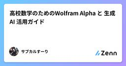
高校数学のためのWolfram Alpha と 生成AI 活用ガイド Zennの「生成 AI」のフィード
はじめに近年、生成AIは学習補助ツールとして急速に普及している。問題文の要約、解法方針の整理、答案の文章化などにおいて一定の有用性があることは事実である。しかし、大学受験の数学において最も重要なのは、論理の厳密性と計算の正確性である。生成AIは自然な説明を生成できる一方で、符号ミス、定義域の見落とし、余分解の未処理、場合分けの不足などを含むことがある。しかも文章が整っているため、誤りが見抜きにくい。この弱点を補う手段として有効なのが、Wolfram Alphaの併用である。生成AIで思考を整理し、Wolfram Alphaで計算と解集合を検証するという二段構えの運用により、誤りの...
2日前
draw.io MCPで画面デザインの叩きを作ってみる Zennの「生成 AI」のフィード
はじめにdraw.ioからMCPサーバが提供されたので、画面デザインの叩きを作ることができるか試してみます。 結論叩きにしては十分すぎる画面デザインを作成してくれました。またdraw.ioで編集可能な形になっているので、人手でブラッシュアップすることができます。編集可能な形式で出力される点は、画像生成AIと差別化できる部分だと思います。生成されたデザインを少し修正した結果がこちらです。 画面デザインの作成 作るものWebカレンダーアプリの画面デザインを作ります。一週間の予定が確認できる画面を想定しています。各予定はタイプ（仕事、プライベート、家族）ごとに分...
2日前
【マーフィー本】ベイズの定理：直感と数式の架け橋
Zennの「機械学習」のフィード
はじめに『確率的機械学習』第2章のハイライト、2.3節「ベイズの定理 (Bayes' Rule)」 についてまとめます。機械学習全体を貫く最も美しい定理であり、特にバイオインフォマティクスでは「観測データから隠れた真実を推定する」ための最強のツールです。 1. ベイズの定理の数式誰もが一度は目にする、あの有名な式です。p(H|Y) = \frac{p(Y|H)p(H)}{p(Y)}ここで、H (Hypothesis) は「仮説」、Y (Data) は「データ」と読み替えると、意味が一気にクリアになります。p(H) (事前確率 / Prior): データを見る前...
2日前
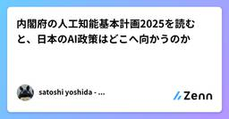
内閣府の人工知能基本計画2025を読むと、日本のAI政策はどこへ向かうのか Zennの「生成 AI」のフィード
2025年12月23日に閣議決定された内閣府の「人工知能基本計画」は、日本がAI時代をどう生き抜くかを示す国家戦略だ・・・内閣府 人工知能基本計画 (令和7年12月23日 閣議決定)でも素人ながら海外の生成AI政策と比較すると、そこには明確な遅れと役所的な構造的な弱点が見えてきてならいです。世界はすでに、AIを国家競争力の中心に据え、半年単位で政策を更新し、技術者が政策形成に深く関わる体制を整えている。一方、日本の計画は並べた言葉の理念としては正しいが、実装のスピード、技術理解の深さ、産業構造の改革など、多くの点で世界の潮流に追いつけていない。今回は海外の生成AI政策の動向を踏...
2日前
AIコーディングエージェントの「隠された哲学」：Copilot, Cursor, Windsurfは何を最適化しているのか？【第2話】 Zennの「生成 AI」のフィード
はじめに：彼らは「中立」ではないAIコーディングと「トロッコ問題」：あなたが引かなかったレバーの先にあるもの【VC-AD 第1話】前回、私たちは「AIに指示しないことは、AIのデフォルト設定に委ねるのと同じだ」という話をしました。これが「AI時代のトロッコ問題」です。では、私たちが普段使っている優秀な運転士たち――GitHub Copilot、Cursor、Windsurf――は、一体どのような「デフォルト設定（バイアス）」を持っているのでしょうか？彼らは単なるテキスト補完ツールではありません。それぞれが 「開発体験において何を最大化すべきか」 という独自の哲学を持って設...
3日前
"Enter２回で中途半端プロンプト送信"を解決した Zennの「生成 AI」のフィード
はじめにChatGPTやClaudeといったAIを日常的に使っていると、Enterを2回押してしまい、書いている途中のプロンプトが送信されてしまうという経験はありませんか?特にコードを書きながら日本語と英語を切り替えていると、1回目のEnterがIMEの変換確定、2回目のEnterでうっかり送信...という流れで、思考途中の雑なプロンプトで会話が始まってしまいます。この煩わしい問題を拡張機能で解決したので、つまずいたポイントも含めて共有します。 ゴール今回目指したのは以下の挙動です:Enter = 改行Ctrl+Enter = 送信これにより、「日本語IMEの変...
3日前
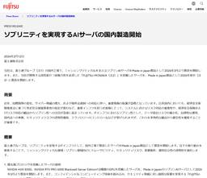
富士通、“Made in Japan”のAIサーバを製造開始 国内一貫生産で“主権性”確保 4ITmedia AI＋ 最新記事一覧
主要部品のトレーサビリティを確保しつつ、プリント基板組立から装置組立まで一貫生産する“Made in Japan"により、データ流出などのセキュリティリスクを軽減する。
3日前
Anthropic、AIによる「電気代高騰」を防止へ インフラ増設費の100％自社負担を約束 14ITmedia AI＋ 最新記事一覧
Anthropicは、AIインフラ拡大に伴う一般家庭の電気料金高騰を防ぐため、増加コストを自社で全額負担する新方針を発表した。将来的に50GW以上の電力が必要とされる中、送電網の増設費用を100％カバーし、独自の発電設備も調達する。AI開発の加速と、一般市民の生活コスト保護の両立を目指す。
3日前
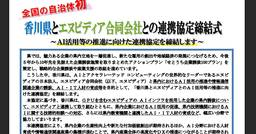
香川県がエヌビディアと連携協定 全国の自治体で初 5ITmedia AI＋ 最新記事一覧
香川県が、米NVIDIAの日本法人エヌビディアと同社のGPUを活用する企業の誘致などに向けた連携協定を結ぶと発表した。県によれば、自治体がエヌビディアと連携協定を結ぶのは初という。
3日前
「高市首相vs.ウルトラマン」「悟空vs.ドラえもん」も……中国発の新動画AI「Seedance2.0」物議 40ITmedia AI＋ 最新記事一覧
中国ByteDanceが2月10日（現地時間）までに発表した動画生成AIの新モデル「Seedance 2.0」がSNS上で物議を醸している。一貫性のある映像を出力しやすいとうたう同モデルだが、XやTikTokではSeedance 2.0で生成したという、日本のIPの映像が続出。中には「高市首相vs.ウルトラマン」といった動画もあり、米OpenAIの動画生成AI「Sora 2」と同様に物議を醸している。
3日前
論文の図を生成するAI「PaperBanana」 Googleなどが開発 ブラウザ上で試せるジェネレーターも公開中 53ITmedia AI＋ 最新記事一覧
北京大学とGoogle Cloud AI Researchに所属する研究者らは、学術論文における図や統計プロットを自動生成するフレームワークを開発した研究報告を発表した。
3日前
Google広告責任者、「エージェントコマース」は2026年に実働段階に移行と語る 7ITmedia AI＋ 最新記事一覧
Googleの広告責任者は2026年の年次書簡で、AIが購買を代行する「エージェントコマース」の本格始動を宣言した。オープン標準「UCP」により「Gemini」などからの直接購入が可能になるほか、「AIモード」内への広告統合や個別割引を提示する「Direct Offers」も導入。広告は対話を通じた支援体験へと進化するとしている。
3日前
Apple Watch加速度計だけで朝のルーチンをどこまでトリガーできるか：TalkMane導入設計を考えてみる Zennの「機械学習」のフィード
AIサマリーApple Watchの加速度だけでも、起床・移動・食事のような粗い行動はトリガー候補にできます。一方で、暖房ONのような環境状態は外部観測（HomeKit/家電ログ）との連携が必要です。TalkManeでは、誤検知対策として「検出→確認カード→承認後反映」の承認制フローで段階導入するのが現実的です。 はじめにTalkManeは「AIが能動的に声かけして、予定を続けやすくする」ことをコアにしている。朝夜の音声セッションで予定を確認し、必要ならその場で作成・更新する体験はすでにある。次に考えたいのが、Apple Watchの加速度を使って日常行動をトリガー...
3日前
AIが「科学者」になる日：Google DeepMindの『Aletheia』が数学の歴史を塗り替えた理由 Zennの「生成 AI」のフィード
Google DeepMindが放った最新モデル「Aletheia」が、数学と科学の境界線を永遠に書き換えてしまったようです。このニュースがまだ一般のトレンドを席巻していないのが不思議なほど、これは**「科学の歴史における転換点」**と言っても過言ではありません。ご要望通り、この衝撃的なニュースを深掘りしたブログ記事を執筆しました。https://deepmind.google/blog/accelerating-mathematical-and-scientific-discovery-with-gemini-deep-think/わずか2.5年前、AIチャットボットは簡単な算数...
3日前
マスク氏、xAIの全社集会で組織再編や「月面電磁カタパルト」計画などを語る 18ITmedia AI＋ 最新記事一覧
イーロン・マスク氏は、SpaceX傘下となったxAIの全社集会を開催し、組織再編と新体制を発表した。創業メンバーの多くの離脱が明かされた一方、Grokや画像生成、AIによる実務代行など4つの重点分野を提示。メンフィスの拠点を100万基規模のGPUクラスターへ拡大し、宇宙空間での計算リソース確保も見据える。
3日前
生成AIを使って、マッチングアプリのプロトタイプを作った話 Zennの「生成 AI」のフィード
初めに2026/2/8の衆議院選挙の候補者選びに、選挙マッチングアプリを使ってみました。結果を友人に共有したところ、「これ、市区町村選挙版も欲しいよねえ」と言われました。「候補者データくれるならば、作ってみるけど?」そんなノリで始まったのが、今回の取り組みです。今回は、RPG形式に置き替えて、ブラウザ上で動作するマッチングアプリとして公開しました。 成果物アプリ：https://httstm.github.io/voter-match/RPG_matching/GitHub：https://github.com/httstm/voter-match/tree/m...
3日前
AIは「確率的オウム」を卒業したのか？ Zennの「機械学習」のフィード
はじめにこんにちは、ルミナイR&Dチームの宮脇彰梧です。普段は大学院でマルチモーダルAIの研究をしながら、仕事では生成AIやAIエージェントの実装、そして日々の技術調査に明け暮れています。さて、2024年の後半から2025年にかけて、私たちの業界には激震が走りました。OpenAI o1やDeepSeek-R1といった、いわゆる「推論モデル（Reasoning Models）」の登場です。チャット画面に表示される「考え中（Thinking...）」というステータス。数秒、時には数十秒の沈黙の後に吐き出される、驚くほど精緻な回答。あれを見て、「今までと何かが違う」と肌で...
3日前
ThreadsにAIでフィードを制御できる新機能「Dear Algo」 2ITmedia AI＋ 最新記事一覧
Metaは、ThreadsでAIがフィードのお勧めを調整する新機能「Dear Algo」を発表した。公開ポストに「Dear algo」に続けて希望のトピックを入力することで、表示内容をカスタマイズできる。まずは米英豪などで提供を開始。ユーザーが自身のアルゴリズムを能動的に制御できる仕組みの導入により、利便性向上を目指す。
3日前
Developer Knowledge APIをMCPサーバー経由で使ってみた G-gen Tech Blog
G-gen の高宮です。Google 公式の技術ドキュメントを検索するための Developer Knowledge API を、Gemini CLI から MCP サーバー経由で使用した検証結果を紹介します。 はじめに Developer Knowledge API とは MCP サーバーで使用可能なツール 注意事項 事前準備 Google Cloud の設定 Gemini CLI の設定 search_documents での検索 質問の投入 検索と回答の流れ get_document での検索 質問の投入 検索と回答の流れ AI 開発におけるドキュメント参照 はじめに Developer…
3日前
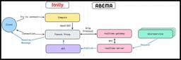
ABEMAのリアルタイム基盤紹介 45 CyberAgent Developers Blog | サイバーエージェント デベロッパーズブログ
CyberAgent Developers Blog | サイバーエージェント デベロッパーズブログ
こんにちは。ABEMAでバックエンドエンジニアのユシンです。本ポストでは、よりTVに近い使用性をご提 ...
3日前
俳句は本当に「エンコード/デコード」なのか？ – ゆる言語学ラジオから学ぶオートエンコーダーの概念（おまけ：復号化警察について） Zennの「ディープラーニング」のフィード
きっかけまずはこちらを御覧ください。https://youtu.be/srb5HwiC3gg?si=JEbMWBqPDIDvQbw1&t=1327https://www.valuebooks.jp/bp/VS0083085767水野さん：俳句って僕ZIPファイルみたいなものなのかと思って、季語って体験の圧縮なんですよ。で、それを鑑賞するってのは解凍するようなことなんだっていうことですね。この本（『AI研究者と俳人 人はなぜ俳句を詠むのか』）の中だとエンコードとデコードって言い方をしていて、つまり何かこういう体験をしたなっていうのをエンコードするとそういう俳句...
3日前
俳句は本当に「エンコード/デコード」なのか？ – ゆる言語学ラジオから学ぶオートエンコーダーの概念（おまけ：復号化警察について） Zennの「機械学習」のフィード
きっかけまずはこちらを御覧ください。https://youtu.be/srb5HwiC3gg?si=JEbMWBqPDIDvQbw1&t=1327https://www.valuebooks.jp/bp/VS0083085767水野さん：俳句って僕ZIPファイルみたいなものなのかと思って、季語って体験の圧縮なんですよ。で、それを鑑賞するってのは解凍するようなことなんだっていうことですね。この本（『AI研究者と俳人 人はなぜ俳句を詠むのか』）の中だとエンコードとデコードって言い方をしていて、つまり何かこういう体験をしたなっていうのをエンコードするとそういう俳句...
3日前
日本語入力で完結する生成AI体験｜PixAIで作るバレンタインイラスト Zennの「生成 AI」のフィード
バレンタインといえば、チョコレートやちょっとしたギフトを用意する方が多いと思います。そこに、もう一つだけ何かを添えるとしたらどうでしょう。例えば、一枚のイラストを添える、という方法もあります。とはいえ、イラストを一から描くのは簡単ではありません。絵が得意な人でなければ、時間もハードルも高く感じてしまいます。そこで選択肢になるのが、生成AIを使ったイラスト制作です。中でも、PixAIは、日本語入力に特化したAIイラスト生成サービスとして知られています。英語プロンプトを書く必要がなく、選択式の操作を中心にイラストを作れるため、初心者でも扱いやすい設計になっています。さらに現在、PixA...
3日前
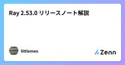
Ray 2.53.0 リリースノート解説 Zennの「機械学習」のフィード
はじめにhttps://github.com/ray-project/ray/releases/tag/ray-2.53.0Ray 2.53.0 は、モデルサービング、分散トレーニング、LLM 対応の各分野においてアップデートがありました。本リリースには 40 件を超える Pull Request が含まれており、パフォーマンスの最適化、新機能の追加、バグの修正が実施されています。本記事では、Ray Serve、Ray Train、Ray LLM、Ray Core の各コンポーネントにおける主要な変更点を確認します。なお、Ray Data については本記事では取り扱いません。...
3日前
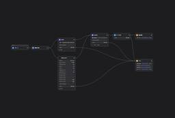
API費用8ドル。「ホリエモンAI選挙」の分析フローをDifyで一部再現してみた ‐ マルチAIエージェント実装ガイド フューチャー技術ブログ
<img src="/images/2026/20260212a/スクリーンショット_2026-02-09_5.08.43.png" alt="" width="1200" height="812" loading="lazy"><h2 id="はじめに"><a
3日前
2/11 (水)
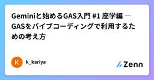
Geminiと始めるGAS入門 #1 座学編 ― GASをバイブコーディングで利用するための考え方 Zennの「生成 AI」のフィード
!この記事は「Geminiと始めるGAS入門」シリーズの記事です。シリーズ目次はこちら Geminiと始めるGAS入門#1 座学編― GASをバイブコーディングで利用するための考え方 ―この記事は、自分でコーディングはできない（または、したくない）けれど、生成AIがコーディングしてくれるならGoogle Apps Script（GAS）を使ってみたい人向けの記事です。 バイブコーディングとはバイブコーディング（Vibe Coding） とは、生成AIと対話しながら、「こういう感じで」という雰囲気（vibe）を伝えてコードを書いてもらう手法です。従来のプログラ...
3日前
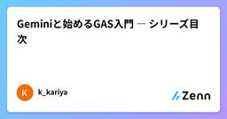
Geminiと始めるGAS入門 ― シリーズ目次 3 Zennの「生成 AI」のフィード
Geminiと始めるGAS入門 ― シリーズ目次― 生成AIと一緒に、Google Apps Script を「使う側」として試す ― このシリーズについてこのシリーズは、自分でコーディングはできない（または、したくない）けれど、生成AIがコーディングしてくれるならGoogle Apps Script（GAS）を使ってみたい人に向けた入門記事です。GASの文法を教えることや、自分でコードを書けるようにすることは目的としていません。生成AI（主に Gemini）にコーディングを任せて、GASを「使う側」として安全に・迷わず試すための考え方と体験を提供することを...
3日前
Claude Coworkの登場 AIエージェント時代に日本SIerの戦い方を本気で考えた Zennの「生成 AI」のフィード
Claude Cowork、Google NotebookLM・・すごいですよねと飲み屋での会話、AIエージェントが実際に業務を動かす時代なのかとも感じました。自動化（Automation）、ワークフロー最適化（Workflow Optimization）、データ活用（Data-Driven Operation）これがグローバルの流れだが、日本企業にはなじまないと以前投稿した。https://zenn.dev/syoshida07/articles/91e14cb740dc64AIエージェント時代をはやり言葉の単語でスルーしておくのか、もっと踏み込むべきかなのか自身も悩んでいるが、...
3日前
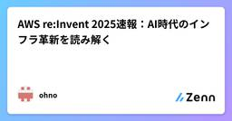
AWS re:Invent 2025速報：AI時代のインフラ革新を読み解く Zennの「機械学習」のフィード
導入2025年12月1〜5日に開催されたAWS re:Invent 2025は、AI実装を大幅に加速させるインフラとサービスの発表が相次ぎました。特に注目すべきは、Amazon Nova 2モデルファミリーの発表、Trainium3 UltraServersによる4.4倍の性能向上、S3のオブジェクトサイズ上限10倍拡大（50TB）、そしてS3 Vectorsの一般提供開始です。これらのアップデートは、AI開発のボトルネックとなっていた「推論コスト」「学習速度」「ベクトルデータベースの運用コスト」を一挙に解消する可能性を秘めています。この記事では、re:Invent 2025の...
3日前
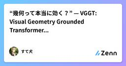
“幾何って本当に効く？” — VGGT: Visual Geometry Grounded Transformerで分かったGeometry Zennの「ディープラーニング」のフィード
はじめにCVPR 2025 Best Paper を受賞した VGGT: Visual Geometry Grounded Transformer は、Transformerベースの画像モデルに「幾何（Geometry）」を取り込んだ研究のようです。ここ最近のViT（Vision Transformer）は画像認識タスクで圧倒的な性能を示してきましたが、一方で 3D的な整合性 や 視点変化への頑健性 には弱いという問題がありました。この記事では、以下のステップでVGGTをまとめていこうと思います。ステップ1：従来のViTが幾何に弱い理由ステップ2：VGGTのアーキテ...
4日前
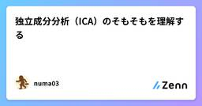
独立成分分析（ICA）のそもそもを理解する Zennの「機械学習」のフィード
PCA（主成分分析）と似ている気がするのに，調べてもいまいち腹落ちしない人のための記事です ICAとはICA（Independent Component Analysis，独立成分分析）は，複数次元の観測データを可能な限り独立な成分に分解する手法である．主に信号処理や画像処理，脳波解析などで利用される．!XとYが独立とは，Xを知ってもYの情報が得られないこと，ラフに言えばXとYが全く連動しないことを意味する．対してXとYが無相関とは，「Xが大きいほどYも大きい」などの比例関係がないことを意味する．以下では，時系列データを例に説明するため変数 tを用いている． ICA =...
4日前
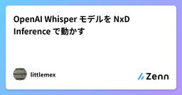
OpenAI Whisper モデルを NxD Inference で動かす Zennの「機械学習」のフィード
対象読者: AWS Trainium/Inferentia で音声認識 (STT) をサービングしたい方前提知識: AWS Neuron 関連の基礎知識、Transformers ライブラリの基本的な使い方📚 音声認識 (Speech Recognition) について学ぶ音声認識の基礎から実装まで体系的に学びたい方は、Hugging Face が提供する無料の学習コース Audio Course - Chapter 5: Automatic Speech Recognition をおすすめします。Whisper を含む最新の音声認識技術を実践的に学べます。私も音声系は無知を極め...
4日前
2/10 (火)
kaggle PhysioNetコンペ 上位解法まとめ Zennの「ディープラーニング」のフィード
はじめに心電図の画像から信号値の復元を行うPhysioNet - Digitization of ECG Images というkaggleコンペが2026/1/23まで開催されていました。コンペ終了後に公開された上位チームの解法からたくさん学びがあったので、備忘録も兼ねてまとめていきたいと思います。!ポンコツ英語力で読み解いた内容になるので理解が間違っている部分があるかもしれません。各ディスカッションのリンクも記載しますので、気になる解法があったらぜひ元記事をご確認ください。 コンペ概要心電図画像から時系列データを抽出するモデルの精度を競うコンペでした。各リー...
4日前
SHAPとは Zennの「機械学習」のフィード
SHAP（SHapley Additive exPlanations）は、各特徴量が予測に与えた影響の大きさを定量化する手法である。 ある入力に対するモデル予測を、各特徴量の寄与の和として分解することで求める。ーーーーーーーーーーーーーーーーーーーーーーーーーーーーーーーーーーーーーーーーーーーー 計算方法(特徴量数 M=4（A, B, C, D)の場合)例えばf(x)が年収予測のモデルなら、特徴量AのSHAP値は、特徴量Aが年収予測を何円上げたかor下げたかを表すーーーーーーーーーーーーーーーーーーーーーーーーーーーーーーーーーーーーーーーーーーーーーーーー...
5日前
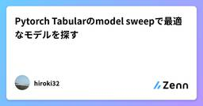
Pytorch Tabularのmodel sweepで最適なモデルを探す Zennの「ディープラーニング」のフィード
Pytorch TabularとはPytorch Tabularは、表形式データ向けの深層学習モデルをまとめて扱うためのライブラリです。モデルをいくつか試し、学習結果を並べて見比べたいときに役立つ機能として、Model Sweepが用意されています。 Model SweepModel Sweepは、複数のモデル設定をまとめて学習し、指定した指標で並べ替えて比較するための機能です。あらかじめ用意されたプリセットを使う方法と、自分でモデル設定のリストを渡す方法があります。!計算量が増えやすいので、GPUで回せる環境だと動かしやすいです。 使ってみる データの前処理...
5日前
生成 AI による仕様書作成とレビューの考え方 434 CyberAgent Developers Blog | サイバーエージェント デベロッパーズブログ
ジャンプTOON ソフトウェアエンジニアの國師 (@ronnnnn_jp) です。 この記事では、仕 ...
5日前
WINTICKETで仕様書作成にAIが定着するまでにやったこと 3 CyberAgent Developers Blog | サイバーエージェント デベロッパーズブログ
目次 はじめに 仕様書AI活用の前提 組織状況の整理 理想の仕様書の定義 AIツールとインターフェー ...
5日前
ログ設計ガイドラインを公開しました 427 フューチャー技術ブログ
<a href="https://future-architect.github.io/arch-guidelines/documents/forLog/log_guidelines.html"><img
5日前
2/9 (月)
深層学習―基礎と概念― 演習問題解答例まとめ Zennの「ディープラーニング」のフィード
2026年2月3日に発売されたC.M.ビショップの深層学習―基礎と概念―本の演習問題解答例です。不備や修正すべき点がありましたらお知らせください。 Index深層学習―基礎と概念― 第2章（2.1から2.21まで）解答例現在、順次作成中です。 数式の記法以下にこの本における数式の記法をまとめる．ベクトルは\mathbf{x}のように小文字の太字Roman体で表記する。行列は\mathbf{M}のように大文字の太字Roman体で表記する。ベクトルは，特に断りのない限り，すべて列ベクトルである．つまり\mathbf{x} = \begin{pmatrix} x_...
6日前
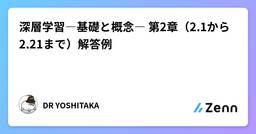
深層学習―基礎と概念― 第2章（2.1から2.21まで）解答例 Zennの「ディープラーニング」のフィード
はじめに深層学習―基礎と概念― 演習問題解答例まとめを参照。 2.1 (★)癌検診の例で，実際に癌である確率をp(C = 1) = 0.01とした．だが現実には，癌である確率は一般にこれよりはるかに低い．p(C = 1) = 0.001である状況を想定し，検査で陽性の結果が得られたときに実際に癌である確率p(C = 1 \mid T = 1)を再計算せよ．この結果は多くの読者の直感に反するものであろう．なぜなら検査は非常に高い精度をほこっているように見えるが，検査結果が陽性であっても実際に癌である確率は低いからである．教科書pp.32-33の流れで紹介されている値を用いて...
6日前
Google Antigravityでバイブコーディングしてみた G-gen Tech Blog
G-gen の三浦です。当記事では Google Antigravity を使用し、バイブコーディングで目標管理アプリを開発する手順と、Browser Agent によるデバッグの流れを紹介します。 概要 Google Antigravity とは リリースステージ 使用可能なモデル データの保護 検証手順 検証 インストール 初期設定 日本語化とルール設定 自然言語による開発 Browser Agent によるデバッグ 概要 Google Antigravity とは Google Antigravity は、AI を使用して開発作業ができる IDE（統合開発環境）です。Google Ant…
6日前
新規事業開発にて「ITやAIは目的ではなく手段である」と再確認した話 フューチャー技術ブログ
<img src="/images/2026/20260209a/top.png" alt="" width="800" height="714"><h2 id="はじめに"><a href="#はじめに" class="headerlink"
6日前
2/8 (日)

GPT-3で知識が止まっている私のための、LLMアーキテクチャ進化論（2020-2026） 1 Zennの「ディープラーニング」のフィード
はじめに2021年、高専の卒研に取り組み始めた頃、GPT-3のベータ版利用の申請が通りデモサイトで触れるようになり、遊び倒していました。175Bパラメータという巨大なモデルが、few-shot learningで様々なタスクをこなす姿に衝撃を受けて、卒研のテーマとして自然言語処理を選びました。当時はTransformerの仕組みやAttention機構、スケーリング法則について一生懸命論文を読んでいました。その後もちょくちょく情報を追いかけていましたが、正直GPT-4が出た2023年以降、完全に置いてかれていました。「GPT-4はMoEらしい」「GQAって何？」「o1は推論時計算...
6日前
衛星データ革命：数式で理解する「自己教師あり学習」の最前線 SatDINO Zennの「ディープラーニング」のフィード
衛星ビジネスにおいて、毎日降り注ぐ膨大なデータを「いかに早く、安く解析するか」はビジネスの価値に直結しています。しかし、ここには大きなボトルネックがあります。それは 「教師データの作成（ラベル付け）」 です。 ここ数年の人工知能（AI）の世界では、人間が「これは車」「これは森」とラベルを貼らなくても、データそのものから学習する 自己教師あり学習（Self-Supervised Learning, SSL） が主流になりつつあります。衛星データの解析においても同様にSSLが主流になり通あります。 この記事では特に注目されている「MAE」や「SatDINO」といった手法を、少しだけ数式を交え...
7日前
【PyTorch②】中間層と活性化関数を導入して、非線形な関数を学習する Zennの「ディープラーニング」のフィード
前回のおさらいhttps://zenn.dev/kouch/articles/cf580a6c9d582d前回は、一番簡単な関数としてy = wx + bという一次関数を設定し、その[x, y]を学習させて、weightとbiasを予想させました。今回は、もう少し複雑な関数として、**「インプットのxを増やす」「二次関数にする」**というレベルアップを試みます。 複雑な関数を学習させてみよう（中間層なし） やりたいこと今回は、このような関数を学習させてみましょう。y = x_1^2 + x_2^2 + 5前回と違い、インプットが[x1, x2]の二つに...
7日前